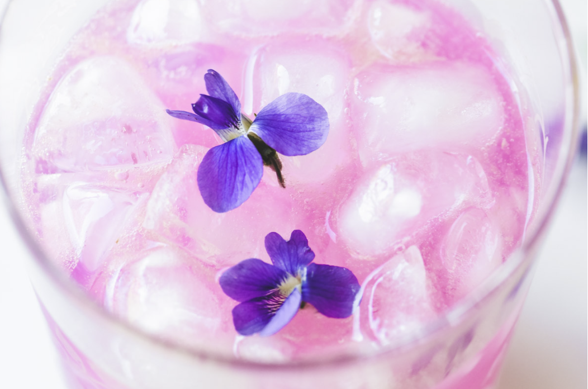

Fresh Violet Lemonade

On a sunny spring day it is a great opportunity to get outside and find a field of violets to forage for fresh lemonade. Adding violets to lemonade brings in a slight floral flavor and a beautiful light purple tint. Poured over ice, this drink makes a perfect springtime refreshment.
Ingredients
- 14 ounces fresh violet flowers (no leaves or stems)
- 1 cup of honey
- 1 cup of fresh lemon juice
- 1 quart of water
- ice
Steps
- Steep violet flowers in 1-quart of boiled water for about 15 minutes.
- Strain the mixture, pouring the violet-infused water into a 2-quart pitcher.
- Stir in 1 cup of honey.
- Stir in 1 cup of fresh squeezed lemon juice.
- Added in enough water to fill up the pitcher.
- When ready to serve pour over a glass of ice and garnish with lemon slices and/or violet blossoms.